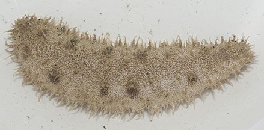
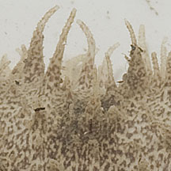
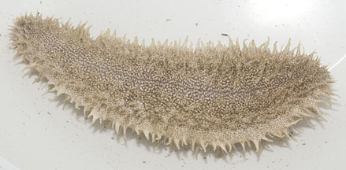
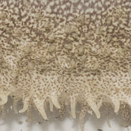
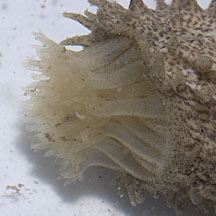

|
|
| sea cucumbers text index | photo index |
| Phylum Echinodermata > Class Holothuroidea |
| Beige
sea cucumber Holothuria albiventer* Family Holothuriidae updated Apr 2020 Where seen? This unassuming sea cucumber is sometimes seen on our Northern shores, among seagrasses. Features: 6-12cm long. Body cylindrical, spindle-shaped (pointed at both ends) with a distinct upperside and underside. Underside is flat with rows of short tube feet. The sea cucumber appears to be but is not actually covered in sediments! Its body colour often matches the colour and texture of the surrounding sediments; beige with tiny darker speckles. In some, when at rest and relaxed, dark blotches that are regularly spaced can be seen along the body length. Feeding tentacles pale with bushy tips. |
|
 Indistinct dark blotches along the body length. Changi, Jul 12 |
 Many soft conical projections. |
|
|
 Flattened underside with rows of stubby tube feet. |
 |
|
 Feeding tentacles. Changi, Jul 12 |
*Species are difficult to positively identify without close examination.
On this website, they are grouped by external features for convenience of display
| Beige sea cucumbers on Singapore shores |
On wildsingapore
flickr
|
| Other sightings on Singapore shores |
Links
|